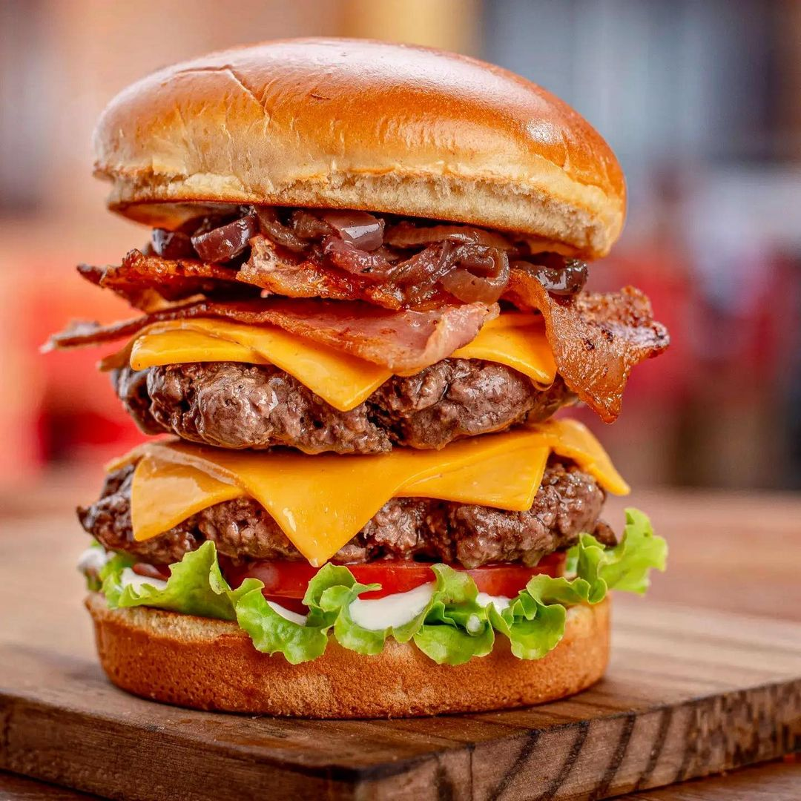

Lanche

Descrição
Um lanche saboroso e nutritivo, perfeito para uma refeição rápida e deliciosa.
INGREDIENTES
- 1kg de carne moída a sua escolha
- paẽs de hamburguer
- fatias de queijo
- fatias de bacon a sua escolha
- folhas de alface
- tomate fatiado
- maionese a sua escolha
- sal e pimenta a gosto
PASSOS
- Tempere a canre moída com sal e pimenta a gosto e misture bem.
-
- Divida a carne em porções e modele os hambúrgueres.
-
- Aqueça uma frigideira e grelhe os hambúrgueres por 4 minutos de cada lado.
-
- Nos últimos minutos, coloque uma fatia de queijo sobre cada hambúrguer para derreter.
- Frite o bacon até ficar dourado e crocante.
- Passe maionese nos pães e, se quiser, leve-os à frigideira para dourar levemente.
- Monte os lanches: pão, alface, tomate, hambúrguer com queijo, bacon e a tampa do pão.
- Sirva em seguida.
Home